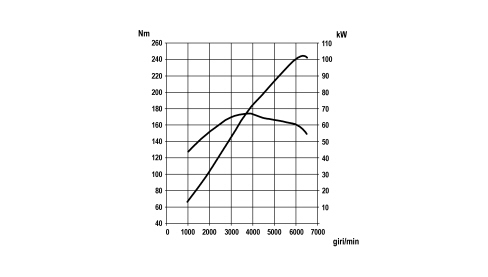
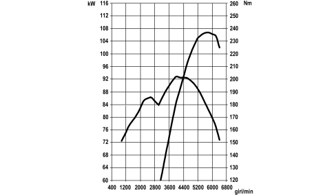

PRESCRIPTIONS
- Path
- Technical Data > DESIGN DESCRIPTIONS AND SPECIFICATIONS > ENGINE CHARACTERISTIC CURVES > PRESCRIPTIONS
- Kind
- technical data / specifications
- Applies to
- all engines; all production periods
- Interactive page
- https://sloeber94.github.io/elrnDB-fCrm/en/#/194001871
Applies to: all engines; all production periods
The power and torque curves illustrated can be obtained with the engine overhauled and run in (50 hours operation) without a fan and with an exhaust silencer and air filter fitted, at sea level.
1.8 engine

2.2 engine

1.9 Multijet 8v engine

1.9 Multijet 16v engine

2.4 Multijet 20v c.a. Engine